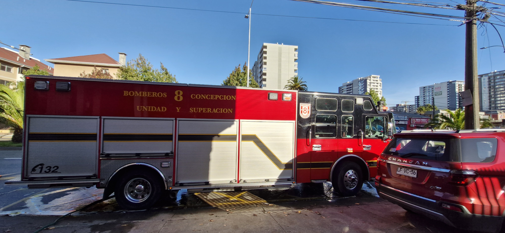
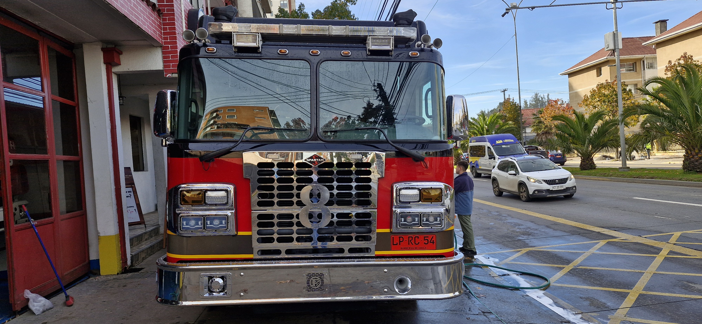

GearMap: El Gemelo Digital 3D para Bomberos y Rescate
Una aplicación móvil interactiva que digitaliza carros bomba y vehículos de emergencia en 3D. Permite a los brigadistas memorizar la ubicación de herramientas, simular la apertura de gavetas y revisar procedimientos en segundos.
¿Qué es GearMap y cómo funciona?
En una situación de emergencia real, el tiempo de respuesta y la precisión en la ubicación del material dentro del carro bomba son críticos. Los manuales tradicionales en papel o carpetas son difíciles de consultar bajo el estrés de la operación.
GearMap resuelve este desafío creando un Gemelo Digital 3D interactivo. La aplicación recrea el vehículo de rescate con modelado tridimensional detallado, permitiendo a los bomberos rotar el camión, abrir gavetas de forma táctil y consultar al instante dónde se encuentra cada manguera, pitón, hacha o equipo de extricación.

Funcionalidades del Proyecto
Diseñado específicamente para la comodidad táctil y el aprendizaje procedimental en dispositivos móviles.
Gemelo Digital 3D Táctil
Modelado 3D preciso del carro bomba y sus compartimentos. Permite a los usuarios inspeccionar visualmente cada rincón del camión desde cualquier ángulo.
Apertura e Inventario de Gavetas
Simulación táctil para abrir compartimentos específicos y desplegar el inventario exacto de herramientas almacenadas en su interior.
Procedimientos & Manuales IFTA
Integración de fichas técnicas y protocolos de emergencia estandarizados para la consulta rápida de guías operativas durante el estudio o la respuesta.
Fotografías & Trabajo con Bomberos
Registro fotográfico durante las sesiones de modelado, levantamiento técnico y validación con los equipos de rescate en Concepción (Unidad Q8).

Levantamiento Técnico en Carro Bomba
Inspección de Herramientas y Gavetas Pruebas de Interfaz Móvil con Voluntarios
Pruebas de Interfaz Móvil con Voluntarios
 Validación de la Unidad Q8 en Concepción
Validación de la Unidad Q8 en Concepción
Desarrollo & Herramientas
Construido con tecnología 3D de tiempo real y optimizado para dispositivos móviles Android e iOS.
Unity 3D Engine
Arquitectura C# optimizada para renderizado móvil en tiempo real con mallas livianas y shaders de alta respuesta táctil.
Modelado 3D en Maya
Levantamiento inorgánico detallado de la estructura del vehículo de rescate y cada una de las herramientas operativas.
Sincronización Cloud
Integración con bases de datos en la nube (Firebase) para mantener actualizado el inventario y estado del material.